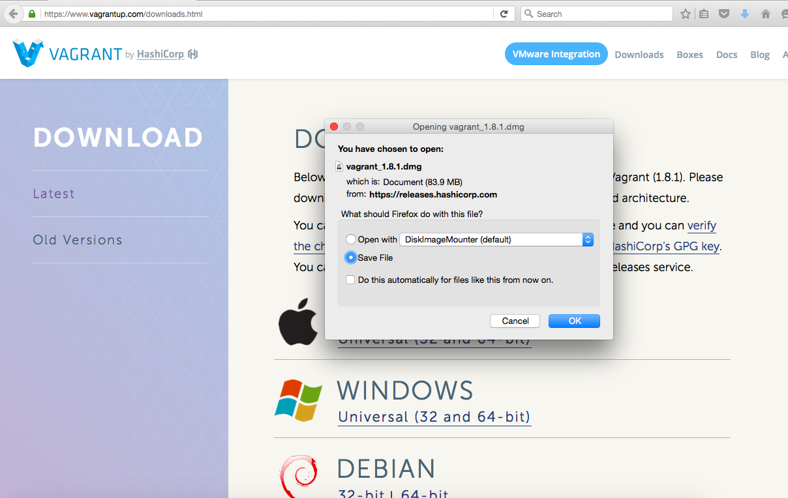
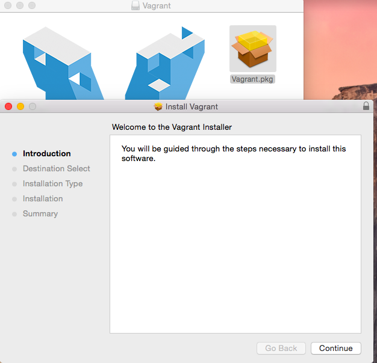
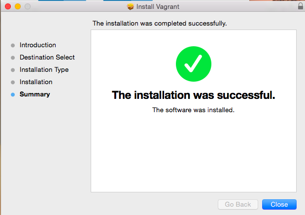
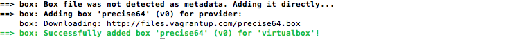
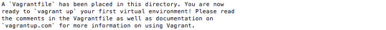
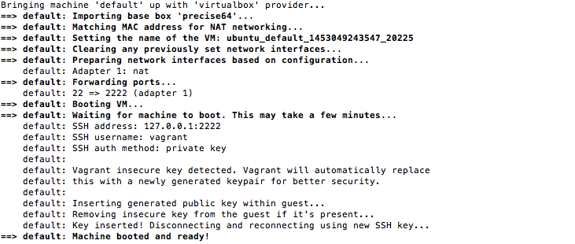
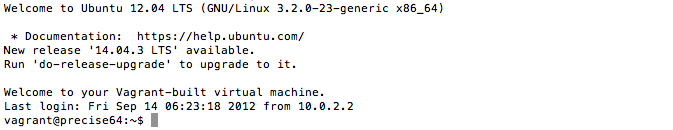

What is Vagrant ?
Vagrant is open source tool which is mainly used for managing, configuring and building virtualized development environment. i.e It is the abstraction on Virtualazation environment.Machines can provisioned on top of VirtualBox, VMware, AWS, or any other provider with the help of vagrant.
Advantage of Using vagrant
No need to worry about ISO images to create new machines Configured with automation tool like puppet, chef and ansible to automatically install software on the machine.
Installation Process
Download Virtual Machine. Virtual Box
Download Vagrant. Vagrant url
Double click on the vagrant.pkg and follow the procedure
 The installer will automatically add vagrant to your system path so that it is available in terminals. Sometime you might have to boot your system.
Adding the box in the vagrant
Add the Vagrant box you want to use. We'll use Ubuntu 12.04 for the following example.
Syntax: Vagrant box add {name} {url}
$ vagrant box add precise64 http://files.vagrantup.com/precise64.box
Initializing directory
This will place a Vagrantfile in your current directory.
$ Vagrant init precise64
Find and change vi VagrantFile # Every Vagrant virtual environment requires a box to build off of. config.vm.box = "precise64"
Starting the box
It will start the box in the virtual machine
$ vagrant up
SSH into the box
Remote login into the box
$ ssh vagrant
Listing and removing the box
Listing all the box that are currently installed
$ vagrant list box
Removing the particular box
$ vagrant remove box {boxname}
Graceful shutdown of running machine
Vagrant halt {nameofmachine}
Ssh on vagrant box
ssh vagrant@127.0.0.1 -p 2222
Default password is vagrant
vagrant ssh-config
Following info will be helpful to ssh
Host default: HostName 127.0.0.1. User Vagrant Port 2222 StrictHostKeyChecking no UserKnownHostsFile /dev/null IdentitiesOnly yes User vagrant IdentityFile /your/user/directory/.vagrant.d/insecure_private_key PasswordAuthentication no
Scp on vagrant box
vagrant plugin install vagrant-scp
vagrant scp localtionoffile :/var/tmp/locationofserver
Different box that are available
vagrant box add puphpet/centos65-x64
vagrant box add data-science-toolbox/dst
Link: Vagrant box